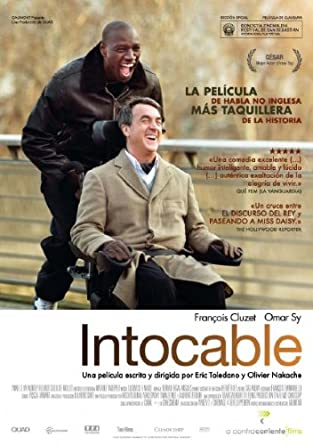
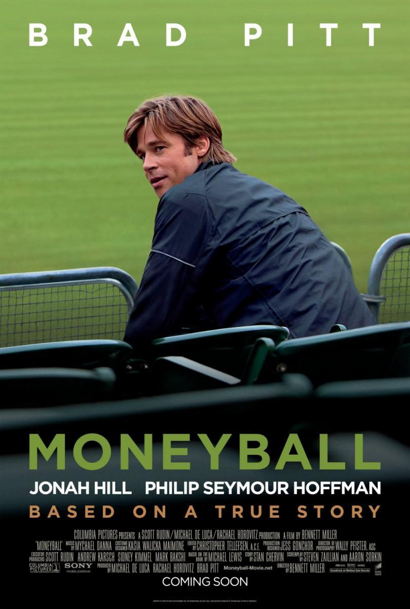
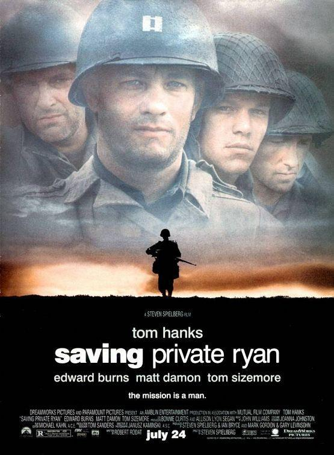

El general romano Máximo es el soporte más leal del emperador Marco Aurelio, que lo ha conducido de victoria en victoria. Sin embargo, Cómodo, el hijo de Marco Aurelio, está celoso del prestigio de Máximo y aún más del amor que su padre siente por él. Cuando Cómodo llega al poder ordena el arresto del general y su asesinato. Máximo escapa de sus asesinos, pero no puede evitar la muerte de su familia. Entonces se convierte en gladiador para llevar a cabo su venganza.
2000
Estados Unidos
En busca de la felicidad
Chris Gradner es un hombre que, decidido a dar una vida mejor a su familia, inicia un negocio que no acaba bien. Chris se queda en paro, su mujer le abandona y le quitan la casa. Este padre soltero tendrá que luchar por una vida mejor para su hijo.
2006
Estados Unidos
Intocable

Tras un accidente de parapente, Philippe, un rico aristócrata, contrata a Driss como asistente y cuidador, un joven procedente de un barrio de viviendas públicas que ha salido recientemente de prisión… En otras palabras, la persona menos indicada para el trabajo
2011
Francia
Moneyball

Billy Beane, director general de un equipo de béisbol, se hizo famoso al conseguir grandes éxitos por medio del método Moneyball, programa que consiste en construir un equipo competitivo con menos recursos económicos que la mayoría de los equipos.
2011
Estados Unidos
The prestige: El truco final
En Londres, a finales del siglo XIX, una época en la que los magos eran los ídolos más aclamados, dos jóvenes ilusionistas se proponen alcanzar la fama. Cada uno de ellos intentará por todos los medios superar al otro y acabar con él.
2006
Estados Unidos
Salvar al soldado Ryan

Tras el desembarco de Normandía, en plena Segunda Guerra Mundial, unos soldados americanos deben arriesgar sus vidas para salvar al soldado James Ryan, cuyos tres hermanos han muerto en la guerra.